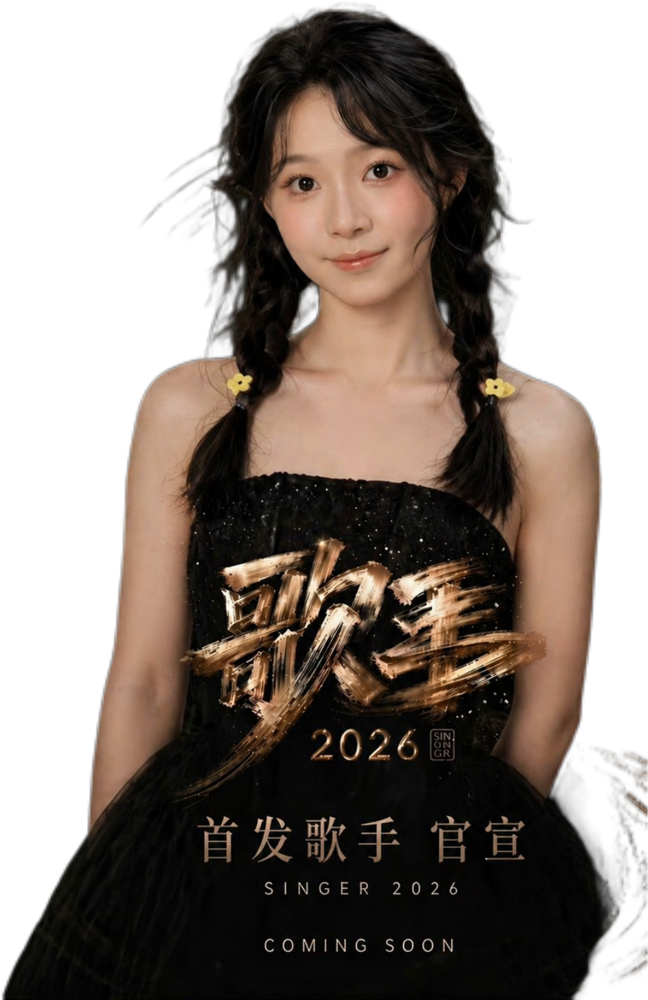

iX*OnE
iX*OnE二专《iX’World》已在网易云音乐上线
iX*OnE二专《iX’World》已在网易云音乐上线，包括：01《Redline》、02《WWW（world world world）》、03《Summer Vacation》、04《Summer Breeze》、05《W：RLD》
时代骏风（TJ Entertainment）成立于2024年，是一家集组织大型文艺演出、艺人培训、艺人经纪为一体的专业文化娱乐传播机构，也是率先采用练习生养成模式进行明星培养的国内经纪娱乐公司。 公司从成立之初就开始招募练习生，并着手打造艺人品牌“TJ家族”，以新媒体推广的形式利用互联网络使TJ家族未出道就先红。有了一定粉丝基础后于2024年，公司通过网络新媒体成功推出成长节目《登基计划》，选出9位少年少女，组成iX*OnE火力全开 。 时代骏风在运营TJ家族架构方面分为练习生艺能培训机构和艺人运营机构两大主体，独立运作又相辅相成。 练习生艺能培训机构：主要品牌为TJ家族。通过全国范围内报名选拔合格者，针对0-100岁的男生、女生进行全方位练习生艺能培训，培训费用全部由公司承担。艺能培训不仅包括舞蹈、声乐、表演、主持等方面，还要确保练习生在出道之后能够熟练掌握各种演艺技能，从而在职业生涯中取得优异成就。 艺人运营机构：艺人策划、整体包装及宣传推广构成了艺人运营机构。机构由深谙日韩偶像运营模式及国内娱乐圈形势的精英团队组成，从未出道时便对旗下练习生进行包装宣传，参与自制节目及网络短剧的录制，保证稳定曝光率，累积经验，或组成组合或个人发展出道，使练习生出道之后更加顺利和成功。出道后，依托时代骏风丰富的媒体资源，配备专业的经纪团队，根据每位艺人不同的特性制定相应的长期发展计划。
2004 / 09 /02
2005 / 08 /26
2004 / 10 / 29
2004 / 12 /
2005 / 04 /07
2004 / 10 / 26

2005 / 02 /
2005 / 08 /
2005 / 08 /